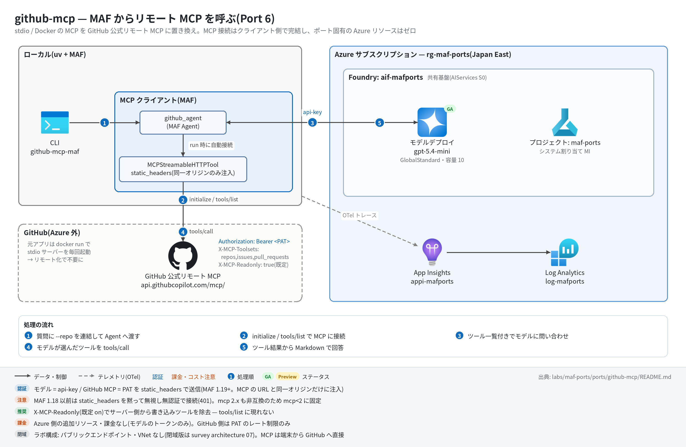

github-mcp 実行ガイド
対象:
labs/maf-ports/ports/github-mcp/(Port 6・パターン: リモート MCP — MAF クライアントから GitHub 公式リモート MCP サーバーへ streamable HTTP 接続)
最終確認: 2026-09-29 オフライン(21 passed・ruff check .clean・依存 agent-framework-core 1.19.0 / agent-framework-openai 1.14.4 / openai 3.20.0 / mcp 1.30.0)/ ライブ: 2026-07-31(当時の構成 core 1.13.0 / mcp 1.29.0、PAT は自前 httpx クライアントのヘッダー。2026-09-29 にstatic_headersへ切り替えた後のライブは未実施。Azure リソースは削除済み — 再デプロイ手順は §5)
正は本 Markdown。 人間用 HTML(同じディレクトリのrunbook.html)はpython3 labs/tools/build_runbooks.pyで生成する(HTML は直接編集しない)。設計判断と移植の学びは README。
1. このパターンで確かめること
- Docker(stdio)なしで、GitHub 公式リモート MCP サーバー(
https://api.githubcopilot.com/mcp/)に PAT ヘッダー付きで接続し(initialize / tools/list)、エージェントがそのツール(list_issues/search_pull_requestsなど)を呼んで実データに基づく Markdown 回答を返すこと。 - 元アプリの環境変数(
GITHUB_PERSONAL_ACCESS_TOKEN/GITHUB_TOOLSETS)が HTTP ヘッダー(Authorization: Bearer/X-MCP-Toolsets)に移り、X-MCP-Readonly: true(既定 on)でサーバー側から書き込みツールが消えること。 - 技術選定上の意味: MCP 呼び出しの実行点と秘密の置き場所がクライアント側(開発者マシン / 自前ランタイム)にある構成。Foundry Agent Service の MCP ツールや Toolbox(GA)に寄せると PAT をサービス側の接続に移せる(README の学び 3 と「今後の選択肢」)。
2. 構成

質問(+ --repo)─▶ build_full_query("{質問} in {repo}")
─▶ github_agent(MAF Agent)────────────────▶ Responses API(共有基盤のモデル、api-key)
└─ MCPStreamableHTTPTool("github", https://api.githubcopilot.com/mcp/)
└─ static_headers: Authorization / X-MCP-Toolsets / X-MCP-Readonly(同一オリジンのみ注入)
─▶ tools/call(list_issues / search_pull_requests / ...)× n ─▶ Markdown 回答| コンポーネント | 役割 | 課金 |
|---|---|---|
CLI / query.run_query(ローカル) |
リポジトリ連結と 120 秒タイムアウト(元アプリと同値) | なし |
MAF Agent github_agent(agents.py) |
OpenAIChatClient(Responses API)。MCP ツールは agent.mcp_tools に分離保持され、async with agent: で接続・切断 |
— |
| モデルデプロイ(共有基盤、既定 gpt-5.4-mini) | ツール選択と回答生成 | トークン従量 |
MCPStreamableHTTPTool(tools.py) |
リモート MCP への streamable HTTP クライアント。HTTP クライアントはツールが生成・破棄(タイムアウト 30 秒 / SSE 300 秒) | なし |
| GitHub 公式リモート MCP サーバー(GitHub ホスト、GA) | GitHub API をツールとして公開 | なし(PAT のレート制限のみ) |
| App Insights(共有基盤) | OTel トレースの送信先(任意) | 取り込み量従量 |
3. 前提
| 区分 | 必要なもの | 備考 |
|---|---|---|
| ツール | uv(Python 3.11 以上。uv が取得。検証は 3.13) | オフライン実行はこれだけ |
| ツール(ライブ) | GitHub CLI(gh auth login 済み)または PAT |
2026-07-31 は gh auth token(gh の OAuth トークン)で接続実績あり |
| Azure(ライブのみ) | 共有基盤(infra/shared.bicep)のみ。本ポート固有のリソースはない | モデルのトークン従量+トレース取り込み |
| 権限 | モデル呼び出しは api-key なのでデータプレーンの RBAC は不要。GitHub 側は対象リポジトリの読み取り権限(公開リポジトリなら通常の PAT で可) | roles.bicep(MI 向け)も本ポートには不要 |
| ネットワーク(ライブのみ) | api.githubcopilot.com への外向き HTTPS |
社内プロキシで SSE / 長時間接続が切られると tools/call が失敗する |
環境変数(labs/maf-ports/.env。雛形は .env.example。ライブ実行時のみ必要。読み込み順はカレントの .env → lab ルートの .env で、既にシェルにある値が優先):
| 変数 | 用途 | 取得元 |
|---|---|---|
FOUNDRY_OPENAI_V1_ENDPOINT |
モデル呼び出し先(https://<foundry>.openai.azure.com/openai/v1)。必須 |
shared.bicep の出力 openaiV1Endpoint |
FOUNDRY_MODEL |
モデルデプロイ名(既定 gpt-5.4-mini)。必須 | shared.bicep の出力 modelDeploymentName |
FOUNDRY_API_KEY |
api-key 認証。必須 | az cognitiveservices account keys list -n <foundryName> -g <rg> --query key1 -o tsv |
GITHUB_TOKEN |
リモート MCP の PAT(Authorization: Bearer)。必須。.env に書かずシェルで渡すのを推奨 |
export GITHUB_TOKEN="$(gh auth token)" または PAT を発行 |
GITHUB_MCP_URL |
接続先。任意(既定 https://api.githubcopilot.com/mcp/) |
— |
GITHUB_TOOLSETS |
X-MCP-Toolsets の値。任意(既定 repos,issues,pull_requests — 元アプリと同値)。空文字でヘッダーを送らない |
— |
GITHUB_MCP_READONLY |
X-MCP-Readonly。任意(既定 true。false / 0 / no / off で解除) |
— |
APPLICATIONINSIGHTS_CONNECTION_STRING |
トレース送信先。任意(未設定ならトレース無効で実行は続く) | shared.bicep の出力 appInsightsConnectionString |
4. オフライン実行(Azure 不要・無料)
cd labs/maf-ports/ports/github-mcp
uv sync --extra dev
uv run pytest # 期待: 21 passed, 1 deselected(live は既定で除外。ネットワーク不要)
uv run ruff check . # 期待: All checks passed!(図スクリプト docs/architecture.py を含む)オフラインテストが固定している主な挙動:
- ヘッダーの対応: PAT →
Authorization: Bearer、GITHUB_TOOLSETS→X-MCP-Toolsets、readonly →X-MCP-Readonly: true(off / 空なら送らない)(test_build_headers_*) - ツールは
static_headersで組み立てられ、自前http_clientは渡さない。load_prompts=False(test_tool_cls_injection_receives_name_url_and_static_headers) - 接続段階(initialize / tools/list)にも 3 ヘッダーが載る — httpx MockTransport のスタブ MCP サーバーで検証(
test_static_headers_reach_initialize_and_tools_list。旧版の「header_provider では接続時 401」の回帰防止) - MCP ツールは
agent.mcp_toolsに分離保持され、instructions は元アプリ原文(test_agent_holds_mcp_tool_separately_from_plain_tools/test_agent_instructions_match_original_app) -
--repoは質問文に含まれないときだけin <repo>を連結、既定タイムアウト 120 秒、空応答は例外にしない(test_repo_is_*/test_default_timeout_matches_original_app/test_run_query_empty_reply_returns_empty_string) -
GITHUB_TOKEN欠落時のエラーにgh auth tokenの案内が出る(test_missing_github_token_mentions_gh_auth_token)
5. ライブ実行(Azure 必要・課金あり)
5.1 デプロイ
# 共有基盤が未作成なら先に作る(→ labs/maf-ports/infra/docs/runbook.md)。本ポート固有のリソースはない。
# 任意: 共有基盤の存在確認とエンドポイント取得(existing 参照+出力のみのテンプレート)
cd labs/maf-ports/ports/github-mcp
az deployment group create -g <rg> -f infra/main.bicep -p baseName=<baseName> \
--query properties.outputs -o json # 期待: openaiV1Endpoint / projectEndpoint が返る5.2 実行
uv sync --extra dev --extra live # live = azure-monitor-opentelemetry(トレース送信)
export GITHUB_TOKEN="$(gh auth token)" # または PAT
uv run github-mcp-maf --repo microsoft/agent-framework "Show me recent merged PRs"
uv run github-mcp-maf "Find issues labeled as bugs in microsoft/agent-framework"
uv run pytest -m live # ライブスモーク(1 passed が期待。2026-07-31 は 18.8 秒)期待される出力の例(値は実行ごとに変わる。PR の中身は実リポジトリの状態次第):
tracing: App Insights 有効 ← stderr(任意)
[mcp] https://api.githubcopilot.com/mcp/ (toolsets=repos,issues,pull_requests, readonly=on) ← stderr
## Recently merged PRs in microsoft/agent-framework ← stdout(Markdown)
| # | Title | Merged | Link |
| --- | --- | --- | --- |
| 1234 | ... | 2026-09-.. | https://github.com/microsoft/agent-framework/pull/1234 |終了コードは 正常 0 / 環境変数不足 2 / タイムアウト 1(error: request timed out after 120 seconds)。MCP 接続の失敗(401 など)は ToolException(MCP server failed to initialize: ...)のトレースバックで終わる。
6. 確認観点
| 確認 | # | 観点 | 確認方法 | 期待結果 |
|---|---|---|---|---|
| 1 | 正常系: リモート MCP 経由の回答 | §5.2 の 1 本目 | stderr に [mcp] ... readonly=on、stdout にマージ済み PR のタイトルと https://github.com/... リンク(表形式が多い)。捏造でなく実在の PR 番号 |
|
| 2 | パターン固有: static_headers での接続(2026-09-29 の改修点) |
uv run pytest -m live |
1 passed。テスト内で tool.is_connected と tool.functions(非空)を確認している = PAT 付きで initialize / tools/list が通った。切り替え後の初回ライブで必ず確認する |
|
| 3 | 読み取り専用ガード | uv run github-mcp-maf --repo microsoft/agent-framework "Close issue #1" |
書き込みは実行されず、書き込みツールが公開されていない旨の説明+代替案。§7 のトレースで tools/call に create / update / close 系が 1 件もない |
|
| 4 | ツール面の絞り込み | GITHUB_TOOLSETS=repos uv run github-mcp-maf "Find issues labeled as bugs in microsoft/agent-framework" |
issues 系ツールが tools/list に現れないため、issue を列挙できない旨の回答になる(または repos 系だけで答える)。tools/list の結果が既定より少ない |
|
| 5 | 異常系: トークン未設定 | GITHUB_TOKEN= uv run github-mcp-maf x(空文字はシェル側の値が優先され .env で上書きされない) |
終了コード 2、stderr に error: 環境変数が未設定: GITHUB_TOKEN(labs/maf-ports/.env を確認。GITHUB_TOKEN は … で始まり、gh auth token での取得方法が案内される |
|
| 6 | 異常系: 無効なトークン | GITHUB_TOKEN=ghp_invalid uv run github-mcp-maf --repo microsoft/agent-framework "hi" |
initialize が 401 で失敗し ToolException: MCP server failed to initialize ... で終了(モデルは呼ばれない。ライブ未確認) |
|
| 7 | 異常系: タイムアウト | uv run github-mcp-maf --timeout 5 --repo microsoft/agent-framework "Show repository health metrics and activity patterns" |
終了コード 1、error: request timed out after 5 seconds |
|
| 8 | 観測: トレース着信 | §7 の KQL | invoke_agent github_agent / chat <デプロイ名> / initialize / tools/list / tools/call <ツール名> / execute_tool <ツール名> が出る |
|
| 9 | コスト・後片付け | ポータルのデプロイのトークンメトリック。テスト用に PAT を発行した場合は GitHub 側で失効 | Azure 側の追加リソース・課金はゼロ(モデルのトークンのみ)。1 質問 = chat 2〜6 回程度(ツール往復回数次第) |
7. トレース・評価の確認
# スパン名ごとの件数(送信から着信まで数分かかることがある)
az monitor app-insights query --app appi-<baseName> -g <rg> \
--analytics-query "dependencies | where timestamp > ago(30m) | summarize count() by name"
# どの MCP ツールが呼ばれたか
az monitor app-insights query --app appi-<baseName> -g <rg> \
--analytics-query "dependencies | where timestamp > ago(30m) and name startswith 'tools/call' | summarize count() by name"- 期待するスパン名(agent-framework-core 1.19.0 のソースで確認。MCP スパンは
{mcp.method.name} {target}形式の CLIENT スパン):invoke_agent github_agent/chat <デプロイ名>/initialize/tools/list/tools/call list_issuesなど /execute_tool list_issuesなど。azure-monitor-opentelemetry 1.8.10 は httpx を既定で計装するため、api.githubcopilot.comと Responses API への HTTP 呼び出しも依存関係として並ぶ(1.8.9 時代のライブより行が増える。名前はライブ未確認)。 - 評価: tests/eval_dataset.jsonl(5 ケース: Issues / PRs / Repository Activity / レビュー待ち PR / readonly ガード)。回答は実リポジトリに依存するため期待値は traits(実データ準拠・リンク付与・表形式・捏造なし)で記述。上の
tools/callの列と突き合わせる。クラウド評価の実装はない。
8. 片付け
# 本ポート固有のリソースはない。共有基盤ごと消す場合:
az group delete -n <rg> --yes --no-wait
unset GITHUB_TOKEN # シェルに残したトークンを消す.envに PAT を書いた場合は削除する(共有.envは全ポートが読む)。
9. トラブルシューティング
| 症状 | 原因 | 対処 |
|---|---|---|
error: 環境変数が未設定: GITHUB_TOKEN ...(終了コード 2) |
トークン未設定 | export GITHUB_TOKEN="$(gh auth token)" |
MCP server failed to initialize: 'InitializeResult' object has no attribute 'protocolVersion' |
mcp 2.x が入った(agent-framework-core 1.19 は mcp 1.x 前提) | pyproject の mcp>=1.30,<2 を外していないか確認し uv sync --extra dev |
MCP server failed to initialize(401 / 403) |
PAT が無効・期限切れ・権限不足 | gh auth status で確認、トークンを再取得 |
| PAT は正しいのに initialize が 401 | agent-framework-core が 1.19 未満(1.18 以前の MCPStreamableHTTPTool は未知の引数を **kwargs で黙って捨てるため、static_headers が無視されて無認証で接続する) |
uv sync --extra dev(pyproject の下限は 1.19)。オフラインの test_static_headers_reach_initialize_and_tools_list が落ちるのが検知の目印 |
error: request timed out after 120 seconds |
ツール往復が多い質問 / GitHub 側の遅延 | --timeout 300 で再実行、質問を絞る |
401 / invalid api key(モデル側) |
FOUNDRY_API_KEY の誤り、または disableLocalAuth: true |
キーを再取得。共有基盤は disableLocalAuth: false が前提 |
| 回答が「ツールがない」と言う | GITHUB_TOOLSETS で必要な toolset を外している / readonly で書き込み系が消えている(想定どおり) |
既定の repos,issues,pull_requests に戻す |
| KQL で MCP スパンが 0 件 | 着信遅延 / --extra live 未導入 / 別の App Insights を見ている |
数分待つ。uv sync --extra dev --extra live と接続文字列を確認 |
10. 関連・更新履歴
- 設計判断と学び(
static_headersへの切り替え理由、mcp<2 の上限ピン、Toolbox という今後の選択肢): README - 共有基盤(デプロイ・.env・削除): 共有基盤の実行ガイド
- MCP / Toolbox の機能状況: features/04-tools-knowledge.md
- 前後のパターン: travel-memory(Port 5・Foundry Memory) / data-analysis-ci(Port 8・Code Interpreter)
| 日付 | 内容 |
|---|---|
| 2026-09-29 | 初版(依存を agent-framework-core 1.19.0 / openai 3.20.0 / mcp 1.30.0 に更新。PAT の載せ方を自前 httpx クライアントから static_headers に改修。mcp 2.2.0 は引き続き非互換を実測。構成図を v2(日本語・処理順バッジ・タグ付き注記)に更新し、図スクリプトも ruff clean に) |